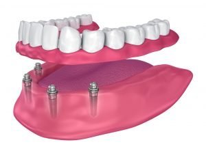

If you have a missing tooth, or several missing teeth, dental implants can be the perfect way to fix your smile. But if you’re considering implants, you probably have some questions about what they are and what to expect from the dental implant process.
Here, you’ll find everything you need to know about dental implants , so you can make an informed decision about whether implants are the right dental solution for you.
What Are Dental Implants?
A dental implant is a titanium screw that replaces a failed tooth root. Just like a tooth root, an implant is inserted into the jawbone to form the foundation for a new tooth. The titanium used for implants is biocompatible — it won’t harm your bone or tissue and should fuse directly to your bone over time.
Implants can support a single replacement tooth (a crown) or multiple false teeth — you don’t need one implant per tooth. A single implant can support dental bridges or a partial set of dentures. For a full set of dentures, you will usually need only a few implants.

Why Choose Dental Implants?
Dental implants have been around for centuries , but as technology has advanced, they’ve become more efficient and popular — and it’s not hard to see why! There are many benefits of dental implants, making them one of the best options to replace damaged and missing teeth.
Implants Look Like Natural Teeth
When false teeth are fitted to implants, you’ll hardly be able to tell the difference between the appearance of your false teeth and your natural teeth. Your dentist will help you choose crowns, bridges or dentures that suit your smile and match your natural tooth colour . And because the false teeth fit perfectly against your gum line, you’d never be able to tell that the tooth didn’t have a natural root.
They Feel Like Natural Teeth
Dental implants don’t just look like natural teeth, but they also feel natural. When you’re eating, speaking or laughing, your implant will feel just like your other teeth — you won’t even notice it. You also don’t have to hold back with what you eat, as once the implant has fused with your bone, it will be as strong as a natural tooth — just don’t overdo it with sugary foods and drinks.
Dental Implants Can Prevent Bone Loss
When you lose a tooth, this can cause the bone in your jaw to break down. By replacing missing teeth with an implant, you actually encourage bone growth rather than bone loss. Your bone should react to the implant as it would to a natural tooth root, and grow and fuse with it.
They’re Long-Lasting
Dental implants might not be a quick fix, but once they’re placed and settled, they can last a lifetime. Most implants will last up to 20 years, but with the right care, they can last much longer.
Taking Care of Your Dental Implants Is Easy
Implants fitted with false teeth require the same maintenance as natural teeth — regular brushing, flossing and dental visits. Providing you already know how to take care of your teeth, you won’t have to learn any new cleaning or care techniques.
What to Expect from the Dental Implant Process
An Initial Consultation
During an initial consultation, your dentist will check your oral and bone health to see if implants are a possibility for you. They’ll inform of you all the options that could transform your smile, and if you’re a good fit for implants and want to continue, they’ll write up a dedicated treatment plan.
Implant Placement
The next step will be the implant placement. It’s a simple procedure, so you have nothing to worry about. The procedure can be done by your dentist in your dental clinic and they’ll use local anaesthesia, so you won’t be in any pain during the implant placement. If you’re nervous, your dentist will put you at ease, talking you through the entire procedure as it happens, and you can also request dental sedation .
To place the implant, your dentist will make a small cut in your gum so they can see the bone beneath. Then, they’ll create a hole in the bone for the implant to be placed into. As well as placing the implant, your dentist will also attach the abutment, a special attachment that connects the implant to the new replacement tooth or teeth.
Integration
After this, it’s just a case of waiting for the implant to fuse to your bone. This is the longest stage of the dental implant process, and it can take anywhere from six weeks to several months. During this time, you’ll have regular check-ups with your dentist to see how your implants are coming along.
You won’t have your replacement teeth fitted until after the implant has fused, so your dentist might offer you temporary teeth for the time being.
Fitting Your New Teeth
Once your implant has fused, it will be strong enough to support replacement teeth. You could use the implant to support a single crown, a set of dentures or a dental bridge. You and your dentist will have discussed your replacement tooth options during your initial consultation.
How Long Does It Take to Get Dental Implants?
The dental implant process usually takes between three and 12 months, but it’s a process that varies from person to person. If you have good bone volume and don’t need any teeth extractions, the entire process will likely take less time. This will also depend on how long your implant takes to fuse with the bone.
Are Dental Implants Safe?
Dental implants are one of the best and safest ways to replace missing teeth. They can prevent bone loss and by replacing missing or damaged teeth, they can prevent infection.
But as with any procedure, there are always risks you should be aware of. Implants can become infected if they’re not looked after properly or regularly checked by a dentist. This can cause the implant to fail, where it won’t fuse with the bone. Your dentist will be able to check for signs of implant infection or failure, and if the implant does fail, they can remove and replace it. However, most people have dental implants with no trouble at all.
How Long Do Dental Implants Last?
One of the main benefits of dental implants is their long lifespan. They can last a lifetime, but most last up to 20 years before needing to be replaced. If you smoke or have a medical condition, such as diabetes, this can lessen the lifespan of your implants. Your dentist will discuss your medical history and lifestyle during your consultation to determine the factors that might make it more likely for your implants to fail or last a shorter period. For most people, however, the better you look after your teeth and implants, the longer they’re likely to last.
Who Can Have Implants?
If you’ve lost a tooth or have a damaged or infected tooth that needs replacing, chances are that dental implants are suitable for you. To be a good fit for dental implants, you need to have a healthy mouth with no untreated decay, infection or gum disease.
Those under the age of 18 won’t usually be considered for dental implants, as their bone will still be developing.
If you’re considering dental implants and want to know more, we’re here to help. Contact us today for more information or to book your initial consultation and get the ball rolling.